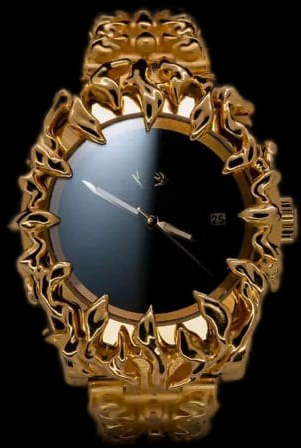

Este reloj de alabastro con aleación de oro es la combinación perfecta de lujo y durabilidad. Con su diseño elegante y sofisticado, este reloj no solo será una forma práctica de mantener el tiempo, sino también una joya que atraerá todas las miradas.
Reloj de alabastro gris con movimiento de cuarzo, resistente al agua y con una esfera minimalista que muestra la hora en números arábigos. La correa de cuero negro acentúa su elegancia. Perfecto para lucir en cualquier ocasión.